Uma situação onde o MongoDB é bastante usado é quando precisamos realizar buscas por proximidade, como, por exemplo, localizar a pizzaria mais próxima de você.
Situações onde o uso do MongoDB não é indicado são cenários onde precisamos fazer muitas operações de agregação em uma única query, isso tem muito custo para o MongoDB.
Rodar o banco: mongosh
Criar uma colletion: db.createColletion("nome_da_colecao")
Exemplo:
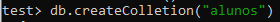Inserindo dados na colletion: db.nome_da_colecao.insert("objeto JS")
Exemplo do comando:
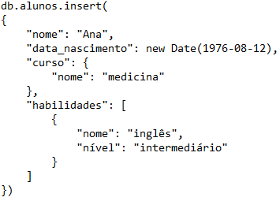Exemplo de objeto JS:
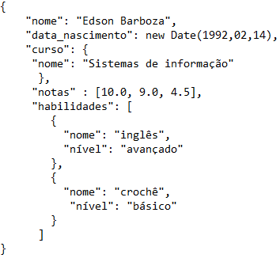Mostrar colletion: db.alunos.find() OU db.alunos.find().pretty()
Exemplos:
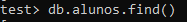OU
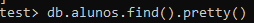Removendo registros: db.nome_da_colecao.remove("objeto JS")
Exemplo:
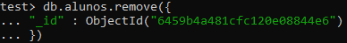Como conseguimos encontrar uma Colletion específica
Exemplo 1:
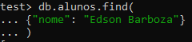Exemplo 2:
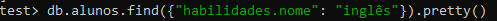Exemplo 3:
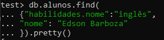Exemplo 4:
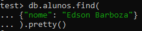Exemplo de consulta com OR:
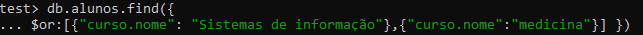Exemplo de consulta com AND:
Exemplo de consulta com IN:
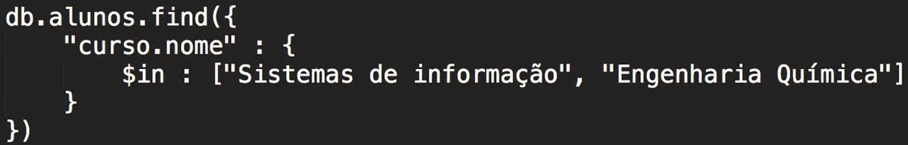Exemplo 1:
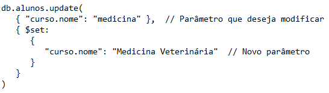Exemplo 2:
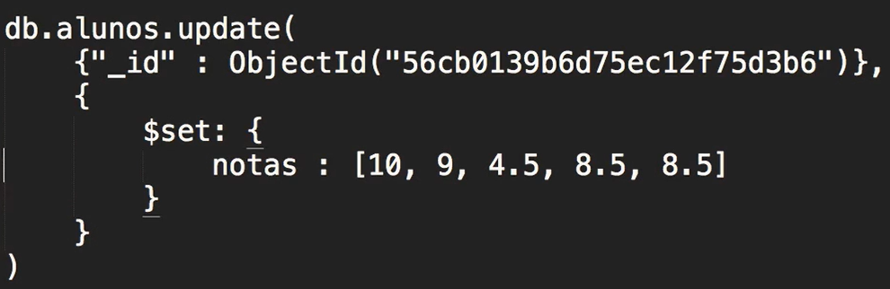Exemplo:
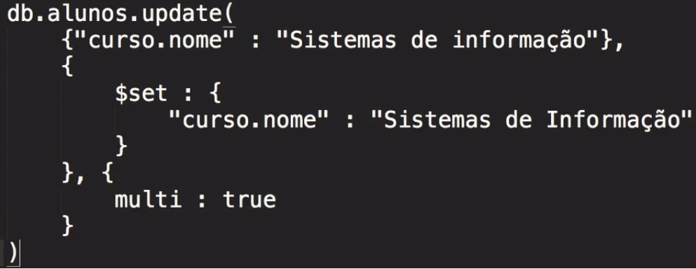Exemplo:
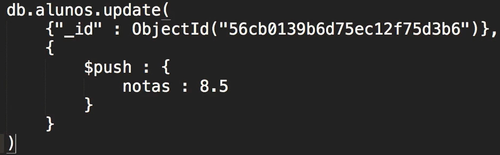Exemplo:
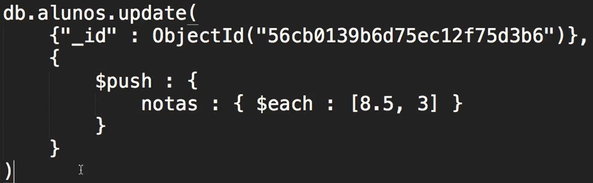Exemplo: Procurando registro de nota maior que determinado valor
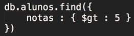Onde: gt = greater than (maior que)
Exemplo: Procurando registro de nota maior que determinado valor - Traz apenas 1 valor (o primeiro que encontra)
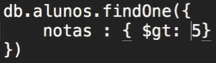Em ordem crescente
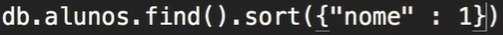Em ordem decrescente
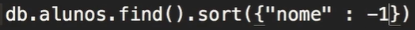Ordenando e limitando número de registros
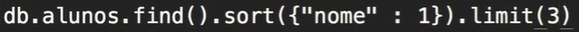OBS: Esse comando de importação não está funcionando nas novas versões!